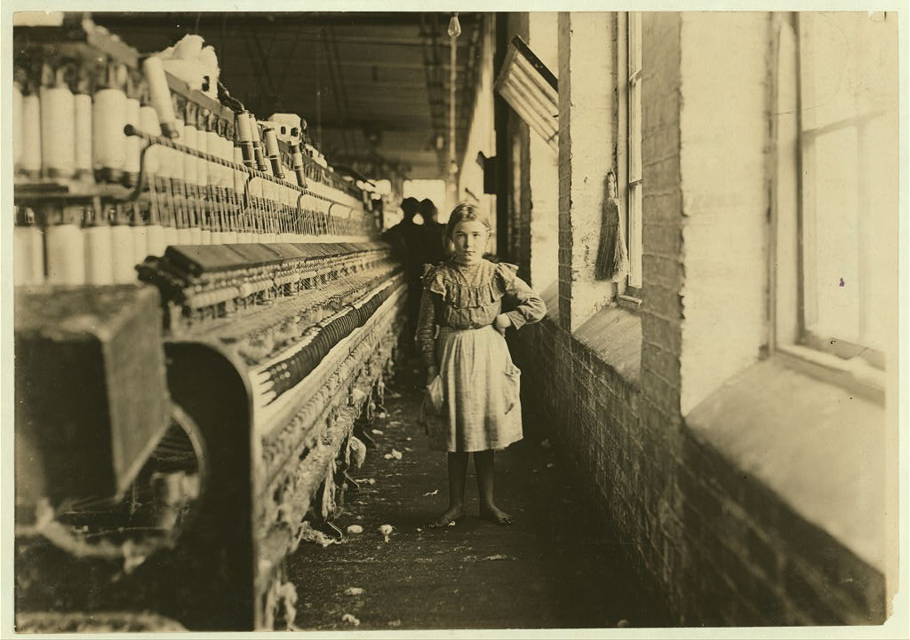

Directions: Study the photograph and the background note, then answer the questions.

Background. Lewis Hine photographed child workers across the United States for the National Child Labor Committee between 1908 and the mid-1920s. In the cotton mills of the South, young girls worked as spinners, watching rows of spinning frames and tying broken threads. The work ran the full mill day, which in this period commonly meant ten to twelve hours. The census of 1900 had already counted about 1.75 million children ages 10 to 15 in paid work. Hine's caption for photographs of this kind noted that some girls were so small they had to climb onto the spinning frame to reach the threads.
spinner: a mill worker who tends spinning frames that twist fibers into thread or yarn
child labor: paid work by children, often in factories, mines, mills, and street trades
1. What details in the photograph show the scale of the workplace compared with the worker? Name two.
2. According to the lesson, why did mills employ children at jobs like this one? Give two reasons, one about the mills and one about the children's families.
3. A mill owner of the period might have answered Hine's photograph this way: the girl has a job, her family needs the money, and the mill has broken no law. Write the two-sentence answer a labor reformer would give, using one fact about wages and one fact about schooling.
1. What details in the photograph show the scale of the workplace compared with the worker? Name two. The girl is small beside the long row of spinning frames, which runs the length of the mill room and is as tall as or taller than she is. She stands alone in a wide aisle between rows of machinery built for an industrial scale, not for a child. Accept any two visible details: the repeating frames, the height of the machinery, the length of the row, her size against it. [Blueprint 5]
2. According to the lesson, why did mills employ children at jobs like this one? Give two reasons, one about the mills and one about the children's families. Mills: children were cheap labor, could reach into small spaces around machinery, and rarely protested. Families: one adult wage, on the order of a few hundred dollars a year, often could not cover rent, food, and clothing, so children's earnings were needed for the family to survive. [Blueprint 5]
3. A mill owner of the period might have answered Hine's photograph this way: the girl has a job, her family needs the money, and the mill has broken no law. Write the two-sentence answer a labor reformer would give, using one fact about wages and one fact about schooling. Model answer: The family needs her wages only because the mill pays her parents too little to live on, a few hundred dollars a year for full-time work. Every year she spends at the frame is a year out of school, which fixes her in the worst paid work for life. Accept any answer that turns the wage fact back on the employer and names the lost schooling. [Blueprint 5]
Teacher note on blueprint coverage. Items 1 to 3 assess Blueprint 5, Industrial work, wages, and child labor. Blueprint 6, Unions and the great strikes, is assessed in the activity verdict and the writing task for this lesson. This check is formative.